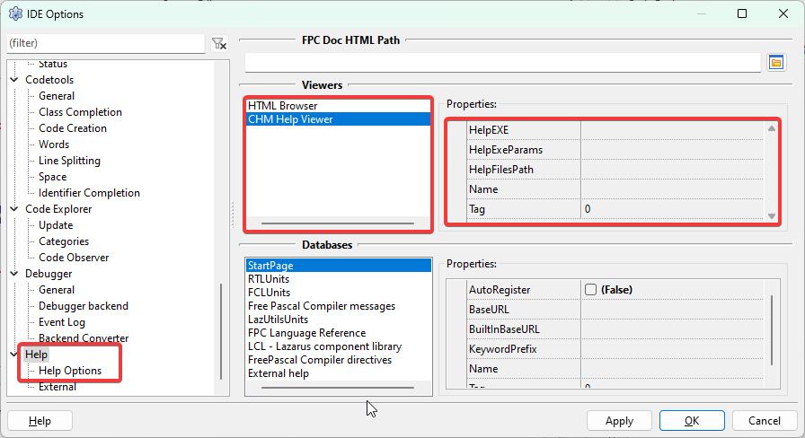

(Este subtópico pode estar incompleto, talvez você possa ajudar enviando instruções que estejam faltando aqui)
Quando usado o instalador oficial do Lazarus o editor de código é integrado a ajuda online, ou seja, se você der um F1 quando uma função ou método estiver em foco então uma janela abre-se com uma explicação sobre o mesmo. Infelizmente isso não funciona quando você faz a instalação via GIT, essa integração você precisa fazer manualmente. Vamos ao procedimento.
Vá até a pasta:
$(LazarusDir)\components\chmhelp\lhelp
Lá você encontrará um arquivo intitulado lhelp (Linux, FreeBSD, macOS) ou lhelp.exe se for Windows. Se você não encontrá-lo é porque você não instalou o pacote ‘chmhelppkg.lpk’, o que é bem estranho, já que o mesmo vem pré-instalado logo depois da compilação pronta.
Agora vá para a pasta:
$(LazarusDir)\docs\chm
E lá você deve encontrar por uma série de arquivos com a extensão *.chm, no meu caso, eles não existem, então aponte seu navegador de internet para o seguinte endereço:
http://sourceforge.net/projects/lazarus/files/Lazarus Documentation/
É uma página assim:

todo: gravar imagem de https://gladiston.net.br/wp-content/uploads/2023/08/image.png para assets/img/sourceforge_docs_list.png
Entre no link correspondente a versão mais recente e faça o Download dum arquivo .zip que internamente tem os arquivos de ajuda (.chm):

todo: gravar imagem de https://gladiston.net.br/wp-content/uploads/2023/08/image-2.png para assets/img/sourceforge_zip_download.png
Descompacte os arquivos na pasta:
$(LazarusDir)\docs\chm
Ficando assim:

todo: gravar imagem de https://gladiston.net.br/wp-content/uploads/2023/08/image-4.png para assets/img/chm_folder_content.png
A documentação e a ajuda online é altamente requerida. Neste ponto a IDE do Lazarus já é esperta o suficiente para quando você apertar F1 chamar a ajuda online.
Caso a ajuda online não funcione, vá em Tools | Options | Help, daí em CHM Help Viewer:

todo: gravar imagem de https://gladiston.net.br/wp-content/uploads/2023/08/image-5.png para assets/img/lazarus_help_options.png
Parâmetros de Configuração
HelpExe: Deve apontar para o utilitário lhelp. Se você deixar em branco, a IDE o procurará em: $(LazarusDir)\components\chmhelp\lhelp\lhelp.exe. No Windows, você pode escolher o utilitário “hh.exe”.
HelpEXEParams: Normalmente ficará vazio a menos que você precise de opções de linha de comando específicas. Se usar o “hh.exe”, use "%s::%s" (com aspas).
HelpFilesPath: Pasta dos arquivos *.chm. Se vazio, a IDE procura em $(LazarusDir)\docs\html e $(LazarusDir)\docs\chm.
Conclusão
Faz muito sentido confirmar se a documentação está presente em seu sistema e seguir os procedimentos acima caso não esteja.